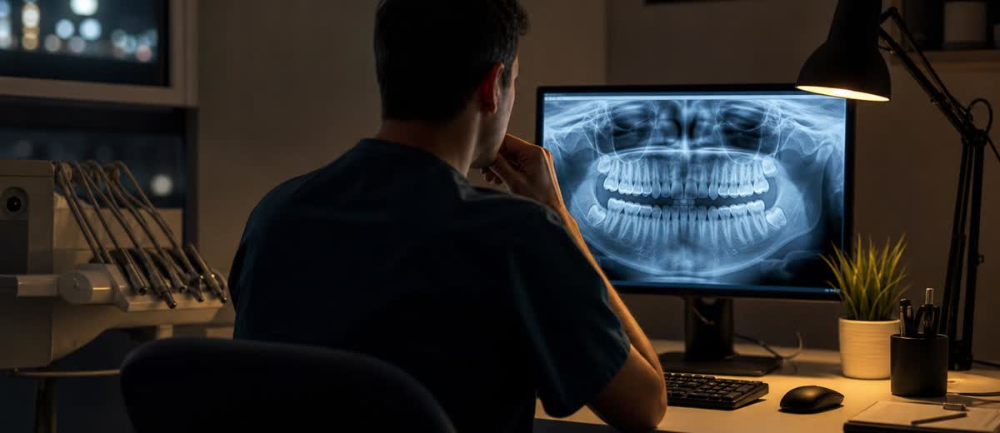

IA en diagnóstico dental: la segunda mirada que evita tratamientos perdidos

Hay diagnósticos que no se pierden por falta de conocimiento.
Se pierden por cansancio.
A última hora de la tarde, después de urgencias, presupuestos, llamadas internas y pacientes entrando y saliendo, el ojo clínico sigue estando ahí. Pero la cabeza ya no está igual que a las nueve de la mañana.
Y eso, en una clínica dental, también es gestión.
La inteligencia artificial no sustituye al dentista. Puede ayudarle a no dejar trabajo real encima de la mesa.
El problema no es mirar radiografías. Es mirarlas dentro del día real
Sobre el papel, revisar una radiografía parece una tarea limpia: pantalla, imagen, criterio clínico y decisión.
En la clínica de verdad, rara vez ocurre así.
La radiografía se mira entre una explicación de presupuesto, una auxiliar preguntando por el siguiente paciente, recepción avisando de un hueco, una llamada pendiente y una agenda que ya va tarde.
El diagnóstico no vive en un laboratorio perfecto. Vive dentro de una mañana cargada, con ruido, presión y decisiones encadenadas.
Por eso la IA dental empieza a tener sentido para dirección, no solo para el gabinete. No como reclamo moderno. No como frase bonita para la web. Como apoyo operativo para reducir errores pequeños, omisiones y segundas visitas que podrían haberse evitado con una revisión más ordenada.
Una segunda mirada que no se cansa
Un proveedor de inteligencia artificial dental afirma que los clínicos asistidos por IA detectan alrededor de un 37% más de patología que cuando revisan sin apoyo.
Conviene leer ese dato con prudencia: viene de un proveedor, no de un censo público independiente. Aun así, la lectura de negocio es útil.
Si una herramienta ayuda a señalar posibles hallazgos, obliga al equipo a mirar dos veces. Y mirar dos veces cambia muchas cosas: mejora la explicación al paciente, reduce la posibilidad de pasar por alto trabajo clínico y da más seguridad a la hora de presentar un tratamiento.
La IA no decide por el dentista. Pero puede levantar la mano donde el ojo cansado quizá pasa de largo.
El diagnóstico también afecta a la conversión
Hay una parte que muchas clínicas no conectan: diagnosticar mejor también puede ayudar a vender mejor, siempre que se haga con ética.
No porque haya que inventar tratamientos. Justo al revés.
Cuando el paciente ve una imagen clara, entiende qué ocurre y percibe que la clínica revisa con calma, la conversación cambia. Ya no escucha solo un precio. Entiende un problema, una consecuencia y una prioridad.
Eso tiene mucho más peso que una frase comercial.
- Más claridad: el paciente entiende mejor qué se ha visto y por qué importa.
- Más confianza: la clínica transmite método, no improvisación.
- Mejor priorización: no todo se presenta como urgente, pero nada relevante se queda sin explicar.
- Menos dependencia del precio: cuando el problema se comprende, el presupuesto deja de ser una cifra suelta.
La venta sanitaria seria no nace de presionar. Nace de explicar bien.
El error: usar la IA como escaparate
Muchas clínicas caerán en la tentación fácil: poner “tenemos IA” en redes, hacer una publicación brillante y esperar que eso atraiga pacientes.
Eso dura poco.
Al paciente no le importa la herramienta si no mejora su experiencia. Le importa que le atiendan mejor, que le expliquen mejor, que no le hagan sentir perdido y que la clínica parezca ordenada.
La IA solo suma si entra en un proceso completo. Si recepción no agenda bien, si el doctor explica deprisa, si el presupuesto se entrega sin seguimiento y si nadie llama después, la herramienta se queda en adorno caro.
Una clínica no crece por comprar software. Crece cuando convierte el software en protocolo.
Cómo aterrizarlo en la clínica
Antes de anunciar nada, dirección debería responder cuatro preguntas:
- Quién revisa: qué profesional valida los hallazgos y asume el criterio clínico final.
- Cuándo se usa: primeras visitas, revisiones, tratamientos complejos o auditorías internas.
- Cómo se explica: qué ve el paciente, qué palabras se usan y qué se evita prometer.
- Qué se mide: diagnósticos detectados, tratamientos explicados, aceptación y seguimiento posterior.
Sin esas respuestas, la IA entra como juguete. Con esas respuestas, entra como sistema.
En Método EBA este tipo de herramienta se entiende dentro de una idea más amplia: gestión, marketing dental, recepción, conversión y experiencia del paciente tienen que trabajar juntos. Porque detectar mejor no sirve de mucho si luego la clínica no sabe explicar, presupuestar y acompañar el tratamiento.
La lectura de negocio
La IA dental no debería venderse como magia. Tampoco debería rechazarse por orgullo profesional.
La pregunta adulta es otra: ¿ayuda a que la clínica sea más rigurosa, más clara y más ordenada?
Si la respuesta es sí, entonces no estamos hablando solo de tecnología. Estamos hablando de una segunda mirada sobre el diagnóstico, sobre la experiencia del paciente y sobre la rentabilidad de tratamientos que quizá hoy se están quedando sin hacer.
La máquina no sustituye la conversación humana. Pero puede llegar antes, señalar mejor y dejar al profesional más tiempo para lo que de verdad cierra un tratamiento: mirar al paciente, explicarle con calma y darle confianza para decidir.